Capítulo 6 Modelos Lineales Mixtos (LMM)
Esta técnica es la más potente para analizar datos longitudinales ya que permite introducir efectos aleatorios y especificar la estructura de correlaciones de los residuos dentro de un mismo individuo.
Además, a diferencia de las dos técnicas anteriores, permite trabajar con missings.
6.1 Ecuación
\[ y_{ij} = \beta_{0i} + \sum_{k=1}^K \beta_{ki} x_{ijk} + e_{ij} \]
Donde \(i\) representa al individuo, \(j\) representa el momento (de uno hasta hasta el número de observaciones del individuo \(i\)),
\(x_{ijk}\) valor de la \(k\)-ésima variable independiente del individuo \(i\) en el momento \(j\).
\(\beta_{0i} \sim N\left(\beta_0, \sigma_{\beta_0}^2\right)\) es la constante del modelo aunque en general se supone aleatoria, o sea que tiene cierta varianza entre individuos y está centrada en la contaste \(\mu\).
\(\beta_{ki} \sim N\left(\beta_k, \sigma_{\beta_k}^2\right)\): pendientes o coeficientes de las variables del modelo. Pueden ser aleatorias, o sea, variar entre individuos.
En general puede haber correlación entre la contante \(\beta_{0i}\) y las pendientes \(\beta_{ki}\).
El vector formado por la constante y por los coeficientes aleatorios, son los efectos aleatorios y se supone que sigue una distribución normal multivariada:
\[\vec{\beta}_i = (\beta_{0i},\beta_{1i},\ldots,\beta_{Ki})^t \sim N\left(\vec{\beta}, \Omega) \right)\]
- El vector formado por los errores de un individuo \(\vec{e_i} \sim N(\vec{0},\Sigma_i)\), sigue una distribuión normal multivariante con una cierta matriz de covarianzas \(\Sigma_i\) que no tiene porqué ser la misma ni del mismo tamaño para todos los individuos ya que no todos los individuos tendrán el mismo número de observaciones. Los errores son independientes de la constante aleatoria y de los coeficientes aleatorios.
Observaciones
Para ajustar este modelo los datos se disponen de forma vertical.
El modelo LMM es muy flexible y potente. No sólo permite especificar efectos aleatorios con lo que evaluar la variabilidad de ciertos efectos o variables entre individuos sinó también la correlación residual entre las distintas medidas repetidas en un mismo individuo.
Cuando hay missings en una observación no hace falta eliminar las otras del mismo individuo, ya que cada fila aquí es una observación y no un individuo.
La esperanza de la constante y coeficientes aleatorios \(\vec{\beta}_i\) es la misma para todos los individuos, \(\vec{\beta}\), y la matriz de covarianzas, \(\Omega\), también (homocedesticidad).
Si un coeficiente no es aleatorio, se puede notar como \(\beta_{k'i} = \beta_{k'}\) en lugar de suponer que sigue una distribución normal. También se podría pensar que sigue una distribución “normal” con varianza cero.
Los efectos fijos son la esperanza de los efectos aleatorios (\(\beta_0, \beta_1, \ldots, \ldots, \beta_k\)). Además, cuando un coeficiente no es aleatorio (tiene varianza cero) se denomina fijo directamente.
Hay un número limitado de efectos aleatorios que se pueden incorporar en el modelo, que no puede exceder el número de medidas por individuo.
La presencia de efectos aleatorios inducen correlación entre medidas de un mismo individuo. Sin embargo, según que estructura de correlación sólo se puede conseguir definiendo también una estructura de correlación entre residuos no nula (no diagonal).
Considerando los coeficientes del tiempo como aleatorios se induce correlación distinta según los tiempos que se toman las medidas.
Considerando el coeficiente de una variable no cambiante en el tiempo se induce heterocedesticidad (varianza diferente) entre los individuos.
Por ejemplo, supongamos un modelo con efecto lineal del tiempo y una covariable no cambiante del tiempo (\(x_i\)). Y tomamos la constante y el coeficiente de \(x_i\) aleatorios y ambos no correlacionados.
\[y_{ij} = \beta_{0i} + \beta_1 t_{ij} + \beta_{2i} x_i\]
Luego la varianza de \(y_{ij}\) es \(\sigma_{\beta_{0}}^2 + \sigma_{2i}^2 x_i^2\). Si \(x_i\) vale 0 para el grupo placebo y 1 para los tratados, entonces la varianza del grupo placebo será \(\sigma_{\beta_{0}}^2\) y para los tratados \(\sigma_{\beta_{0}}^2 + \sigma_{\beta_{2}}^2\)
- A diferencia de las técnicas de sumas de cuadrados y de respuesta multivariante, en que la variable tiempo se trata como a un factor, con los LMM se tratar también como variable continua.
6.2 Casos particulares
6.2.1 Modelo con constante aleatoria
\[y_{ij} = \beta_{0i} + \beta_{1} t_{ij} + e_{ij}\]
Donde \(\beta_{0i} \sim N(\beta_0, \sigma_{\beta_0})\), y \(\beta_1\) es el coeficiente fijo del tiempo. En este caso se supone que el tiempo tiene un efecto lineal.
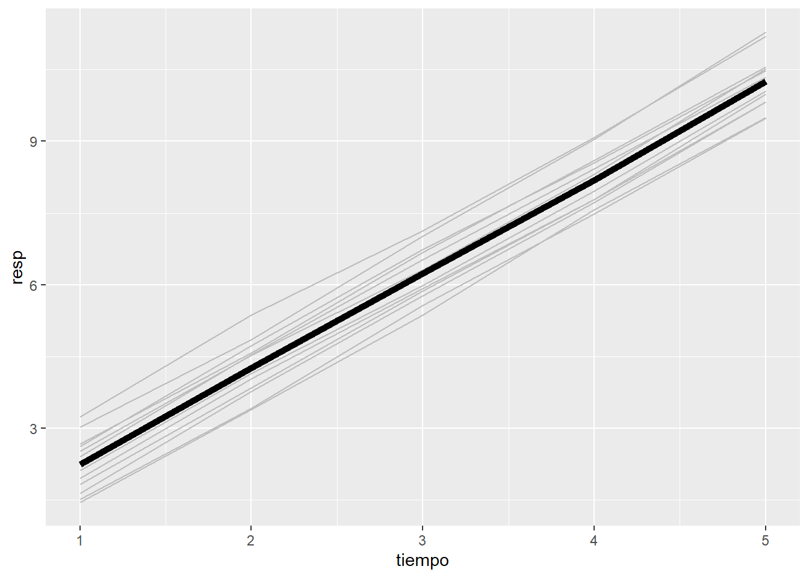
Podríamos añadir un término cuadrático, cúbico, etc. si el efecto no fuera lineal y añadiéramos un término cuadrático:
\[y_{ij} = \beta_{0i} + \beta_{1} t_{ij} + \beta_{2} t_{ij}^2 + e_{ij}\] en este caso, \(x_{ij1}=t_{ij}\) y \(x_{ij2}=t_{ij}^2\).
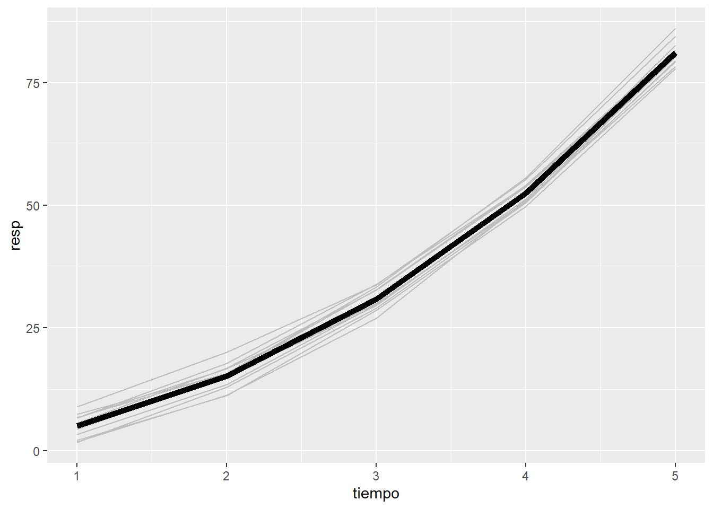
Correlacion entre observaciones
Si los errores son independientes, las observaciones de la variable respuesta de un mismo individuo están correlacionadas. Y esta correlación es constante: no depende de la distancia entre las medidas.
\[\text{corr}(y_{i1},y_{i2}) = \text{corr}(y_{i1},y_{i3}) = \ldots = \frac{\sigma_{\beta_{0}}^2}{\sigma_{e}^2}\]
A esta correlación también se la conoce como coeficiente de correlación intraclase (ICC)
6.2.1.1 Modelo con pendiente y constante aleatoria
\[y_{ij} = \beta_{0i} + \beta_{1i} t_{ij} + e_{ij}\]
\(\vec{\beta}_i = (\beta_{0i}, \beta_{1i})^t \sim N\left((\beta_0,\beta_1)^t, \Omega\right)\), donde
\[\Omega= \begin{pmatrix} \sigma_{\beta_0}^2 & \sigma_{\beta_0,\beta_1} \\ \sigma_{\beta_0,\beta_1} & \sigma_{\beta_1}^2 \end{pmatrix} \]
El término \(\sigma_{\beta_0,\beta_1}\) es la covarianza entre la constante y la pendiente. Ésta en general puede no ser cero.
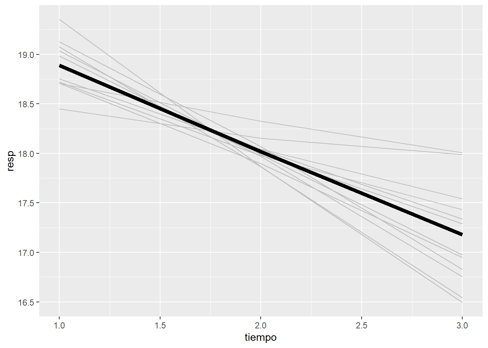
En este gráfico se observa primero que las pendientes son diferentes entre los individuos. Y además, que los individuos que empiezan de más arriba bajan más rápido y viceversa. Así pues, la correlación entre la constante y la pendiente es negativa.
Correlacion entre observaciones
En el modelo con constante y pendientes aleatorios, si asumimos que los errores son independientes, las observaciones de la variable respuesta de un mismo individuo están correlacionadas. Y esta correlación depende de los momentos:
\[\text{corr}(y_{i1},y_{i2}) = \frac{\sigma_{\beta_{0}}^2+\sigma_{\beta_{1i}^2 \cdot t_1 \cdot t_2}}{\sqrt{\sigma_{\beta_{0}}^2+\sigma_{\beta_{1}}^2 \cdot t_1^2 + \sigma_e^2}\sqrt{\sigma_{\beta_{0}}^2+\sigma_{\beta_{1}}^2 \cdot t_2^2 + \sigma_e^2}}\]
Por lo tanto depende tanto de \(t_1\) como de \(t_2\) y no sólo de la distancia entre las medidas.
Si lo comparamos con el AR(1):
Ejemplo con \(t_1=1\), \(\sigma_{\beta_{0}}^2=0.5^2\), \(\sigma_{\beta_{1}}^2=0.3^2\) y \(\sigma_{e}^2=0.1^2\), con \(t_1=1\)
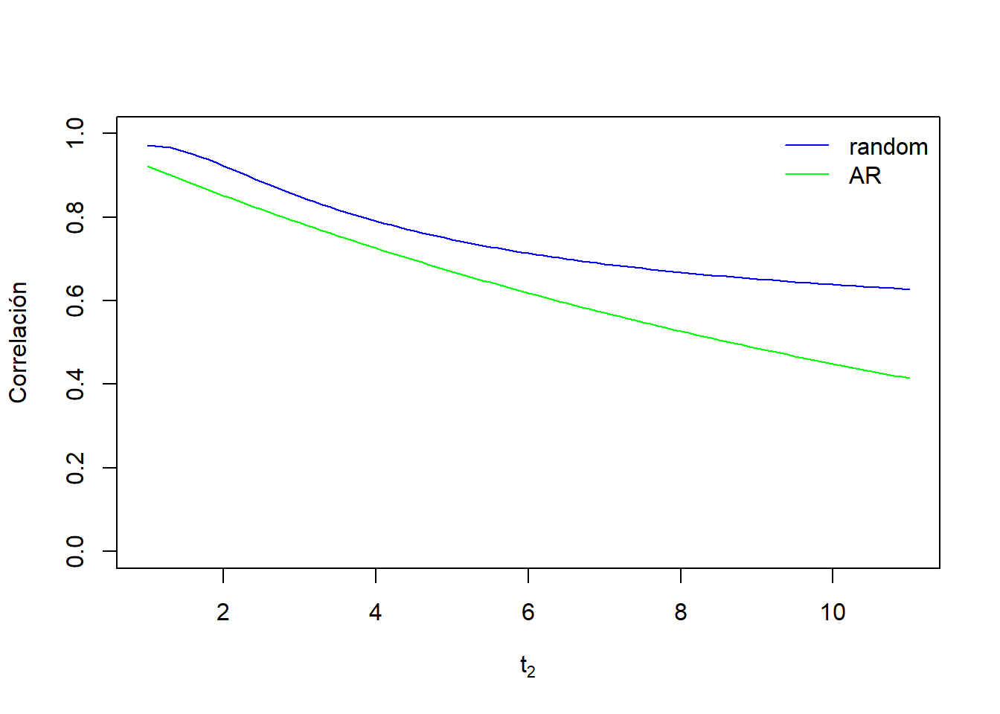
En este ejemplo, vemos como especificando el AR y la pendiente fija, la correlación entre observaciones baja más rápidamente a medida que las observaciones se alejan (\(t_2\)) que lo que se consigue especificando la pendiente aleatoria y los errores incorrelacionados.
6.3 Simplificación del modelo
Empezaremos con el modelo más general, o sea, sin asumir independencia de los residuos, con efectos aleatorios (todos los que se admitan) correlacionados.
En cuanto a los efectos fijos, se incluyrán también los máximos que se puedan, interacciones si es pertinente, terminos cuadráticos (cúbicos), …
A partir de aquí se simplificará el modelo en el siguiente orden:
6.3.1 Significación de los efectos aleatorios
La hipótesis nula para contrastar los factores de efectos aleatorios es que su varianza es igual a cero. Por ejemplo para la constante aleatoria:
\[\left\{\begin{array}{l} \text{H}_0: \sigma_{\beta_0}^2 = 0 \\ \text{H}_1: \sigma_{\beta_0}^2 > 0 \end{array}\right. \]
Hay diferentes técnicas estadísticas para contrastar estos tests, pero no son estándard. El problema es que la varianza de una distribución normal no puede ser cero, por lo tanto la hipótesis nula está fuera del espacio parametrico (“beyond boundary”). Existen, pero, algunas herramientas en R que lo realizan mediante técnicas de remuestreo (“bootstrap”). Éstas son complejas desde el punto de visto teórico y no se explicarán en este curso (véase el paquete de R pbkrtest @pbkrtest2014).
Otra alternativa es usar índices como el AIC o BIC (cuanto más bajo mejor), que proporciona la función anova en la comparación de dos modelos: uno considerando el coeficiente como aleatorio (\(\beta_{ik}\)) el otro considerando el coeficiente como fijo (\(\beta_{k}\)).
6.3.2 Elección matriz covarianzas de los efectos aleatorios
Si en el paso anterior, hay más de un efecto aleatorio significativo, seguidamente hay que contrastar si la correlación entre ellos es cero o no. Es decir, H\(_0\) postula que la matriz \(\Omega\) es diagonal, mientras que la H\(_1\) se asume que las correlaciones pueden ser no nulas.
\[\left\{\begin{array}{l} \text{H}_0: \Omega= \begin{pmatrix} \sigma_{\beta_0}^2 & 0 \\ 0 & \sigma_{\beta_1}^2 \end{pmatrix}\\ \text{H}_1: \Omega= \begin{pmatrix} \sigma_{\beta_0}^2 & \sigma_{\beta_0\beta_1} \\ \sigma_{\beta_0\beta_1} & \sigma_{\beta_1}^2 \end{pmatrix} \end{array}\right. \]
Como la matriz diagonal es un caso particular de la matriz general, en que las correlaciones son cero se puede aplicar el test de razón de verosimilitudes.
6.3.3 Estructura de correlación de los errores
Mediante el test de razón de verosimilitudes (LRT), se comparan las verosimilitudes de dos modelos.
Hay que ajustar el modelo mediante el criterio de máxima verosimilutud.
Los modelos tienen que estar anidados: la matriz de covarianzas de los errores de un modelo se pueda expresar como un caso particular de la del otro modelo. Por ejemplo, la matriz sin estructura sería la más general de todas, y la matriz de simetría compuesta sería un caso particular en que todas las correlación son iguales. No están anidadas las matrices con estructura MA(1) y una AR(1).
La simetría compuesta es un caso particular de matriz sin estructura.
\[ \begin{pmatrix} 1 & \rho_{12} & \rho_{13} \\ \rho_{12} & 1 & \rho_{23} \\ \rho_{13} & \rho_{23} & 1 \\ \end{pmatrix} \Rightarrow \color{blue}{(\rho_{12}=\rho_{13}=\rho_{23} =\rho)} \Rightarrow \begin{pmatrix} 1 & \rho & \rho \\ \rho & 1 & \rho \\ \rho & \rho & 1 \\ \end{pmatrix} \]
La matriz que supone independencia entre los residuos es un caso particular de matriz de simetría compuesta.
\[ \begin{pmatrix} 1 & \rho & \rho \\ \rho & 1 & \rho \\ \rho & \rho & 1 \\ \end{pmatrix} \Rightarrow \color{blue}{(\rho=0)} \Rightarrow \begin{pmatrix} 1 & 0 & 0 \\ 0 & 1 & 0 \\ 0 & 0 & 1 \\ \end{pmatrix} \]
Pero no se puede pasar de una AR(1) a una MA(1) ni viceversa. En este caso el test LRT no es válido pero sí el criterio AIC o BIC.
\[ \begin{pmatrix} 1 & \rho & \rho^2 \\ \rho & 1 & \rho \\ \rho^2 & \rho & 1 \\ \end{pmatrix} \Rightarrow \color{blue}{(????)} \Rightarrow \begin{pmatrix} 1 & \frac{\theta}{1+\theta^2} & 0 \\ \frac{\theta}{1+\theta^2} & 1 & \frac{\theta}{1+\theta^2} \\ 0 & \frac{\theta}{1+\theta^2} & 1 \\ \end{pmatrix} \]
Una matriz AR(p’) está anidada a AR(p) si p’ < p, o sea un AR de orden menor está anidado a una de orden mayor, y por lo tanto, se puede aplicar un LRT para decidir el valor de p. Por ejemplo, un AR de orden 3 se especificaría como correlation = corARMA(p=3, q=0). Lo mismo sucede para decidir el orden de una MA. Por ejemplo, para una MA de orden 4, correlation = corARMA(p=0, q=4).
Heterocedesticidad:
La heterocedesticidad se produce cuando los parámetros de la matriz de covarianzas \(\Sigma\) dependen de variables. Por ejemplo, del sexo o de la edad, etc, o de una combinación lineal de las variables (valor esperado).
Por ejemplo, que la varianza sea distinta según el sexo, mientras que la correlación sea la misma:
para hombres
\[ \Sigma_{\text{H}} = \sigma_{\text{H}}^2 \begin{pmatrix} 1 & \rho & \rho^2 \\ \rho & 1 & \rho \\ \rho^2 & \rho & 1 \\ \end{pmatrix} \],
y para las mujeres
\[ \Sigma_{\text{M}} = \sigma_{\text{M}}^2 \begin{pmatrix} 1 & \rho & \rho^2 \\ \rho & 1 & \rho \\ \rho^2 & \rho & 1 \\ \end{pmatrix} \]
También podríamos definir las varianzas (diagonal de \(\Sigma\)), en función del tiempo.
Veremos como es posible modelizar diferentes varianzas distintas entre grupos de individuos con la función lme de R que se describirá en esta sección.
6.3.4 Efectos fijos
Una vez escogida la estructura de covarianzas de los efectos aleatorios, de los errores, y qué efectos son aleatorios (contraste sobre sus varianzas), vamos a contrastar la significación de los efectos fijos:
Para ello, se puede usar el test de Wald para testar un único parámetro:
\[ \left\{\begin{array}{l} \text{H}_0: \beta_1 = 0\\ \text{H}_1: \beta_1 \neq 0 \end{array}\right. \]
o LRT para testar más de un parámetro a la vez, por ejemplo las dummies de un factor de más de dos categorías:
\[ \left\{\begin{array}{l} \text{H}_0: \beta_1 = \beta_2 = 0\\ \text{H}_1: \text{alguno diferente de 0} \end{array}\right. \]
6.4 Validación del modelo
Una vez simplificado y seleccionado el modelo, hay que validarlo.
De todas las premisas a comprobar en este curso nos limitaremos a las asumciones sobre los residuos.
Para ellos se realizarán dos gráficos:
Residuos estandarizados vs valores predichos: en este gráficos debería aparecer una nube de puntos uniformemente distribuida sin ninguna tendencia. Ésto nos indicaría que no nos hemos dejado ninguna variable, o ningún término cuadrático o cúbico del tiempo.
QQ-plot: éste gráfico está pensado para comprobar la normalidad. Si los puntos se encuentran alrededor de la diagonal sin seguir ningún patrón, dará evidencia de que los residuos siguen una distribución normal
Hay otras premisas que se deberían comprobar, como por ejemplo la normalidad de los efectos aleatorios. Pero, por su complejidad, no se verá en este curso.
La valicación de los efectos aleatorios es más compleja. Una posibilidad “naive” es considerar que sus estimaciones siguen una distribución normal y que su distribución no depende de ninguna covariable a nivel de individuo. Veremos como las funciones de R para estimar los LMM proporcionan las estimaciones de los efectos aleatorios (“Empirical Bayes Estimates”). Aunque los efectos aleatorios se suponen normalmente distribuidos, los “Empirical Bayes Estimates” no tienen porqué.
6.5 Predicciones
6.5.1 Efectos marginales
Los efectos marginales representan el valor esperado de la variable respuesta. Para calcularlos hay que especificar los valores de las variables predictoras (condicionar):
\[E(Y_{ij} | x_{ij1},\ldots,x_{ijK}) = \beta_0 + \sum_{k=i}^K \beta_k x_{ijk}\]
Una vez ajustado el modelo con los datos de la muestra, se estiman los valores de los parámetros para estimar los efectos marginales o predicciones.
\[\hat{E}(Y_{ij} | x_{ij1},\ldots,x_{ijK}) = \hat{\beta}_0 + \sum_{k=i}^K \hat{\beta}_k x_{ijk}\]
6.5.2 Estimación de los efectos aleatorios
También podemos condicionar al individuo:
\[\hat{E}(Y_{ij} | x_{ij1},\ldots,x_{ijK}, i) = \hat{\beta}_{0i} + \sum_{k=i}^K \hat{\beta}_{ki} x_{ijk}\]
Donde \(\hat{\beta}_{0i}\), \(\hat{\beta}_{ki}\) son los “Empirical Bayes Estimates”.
6.6 Función lme
Para ajustar los modelos lineales mixtos usaremos la función lme del paquete nlme [@R-nlme].
Esta función permite incorporar efectos aleatorios, así como especificar la estructura de la matriz de correlaciones de los residuos.
El método se basa en el criterio de máxima verosimilidud (“Maximum Likelihood” - ML), que busca el valor de los parámetros que maximizan la función de verosimilitud. Generalmente, la solución no es una fórmula cerrada y se necesitan métodos iterativos numéricos para encontrar el óptimo. También se calculan mediante métodos numéricos la primera y segunda derivada para acelerar el proceso de estimación y para obtener los errores estándard de las estimaciones.
Para usar la función lme, los datos deben estar en formato horizontal. No hace falta que haya el mismo número de medidas para cada individuo, ni que las medidas se hayan producido en los mismos tiempos.
library(nlme)?lmeLos argumentos más importantes de la función lme
fixed: Fórmula de la forma
respuesta ~ var1 + var2 + var3
La constante se presupone que está y no hace falta escribir 1+.
La sintaxis es la misma que para el “formula environment” de otras funciones estándard como lm para regresión lineal ordinaria (los términos van separados con +, las interacciones se especifican con :, etc.).
A la izquierda de ~ se especifica la variable respuesta.
random: fórmula de la forma
~ var1 + var2 + ... + varK | indivsin ninguna variable a la izquierda de ~, donde indiv es la variable sujeto y var1, var2, … varK son las variables con coeficiente aleatorio.
Por defecto se supone que la constante está incluida.
Si se desea que la constante no sea aleatoria
~ var1 + ... + varK - 1 | indiv.
Si sólo la constante es aleatoria
~ 1 | indiv
Para especificar que la matriz \(\Omega\) es diagonal se usa la función pdDiag
list(indiv = pdDiag( ~ var1 + var2 + ... + varK))
Si los individuos estuvieran anidados en clústers aleatorios:
~ var1+..| clusters / indiv
correlation: Para especificar la forma de la matriz de covarianzas de los residuos \(\Sigma_i\). Para más estructuras:
?corClassesResiduos independientes (valor por defecto):
NULLSimetría compuesta:
corCompSymm()AR(1):
corAR1()ARMA(p,q):
corARMA(p,q)\(\phi^{|t_i-t_j|}\):
corCAR1(form = ~ tiempo | indiv)Sin estructura |
corSymm()
Para corCAR1, \(\phi\) es la correlación entre dos medidas a distancia de una unidad de tiempo.
Importante!: para corCompSymm, corAR1, corARMA o corSymm, las medidas tienen que estar ordenadas dentro de cada individuo. Si no, hay que especificar la variable momento,
corAR1(form = ~ tiempo | indiv)weights: Este argumento modeliza la varianza, \(\sigma^2\) según variables. Por defecto,
NULLque supone que la matriz de covarianzas es la misma para todos los individuos. En lugar de una variable, puede ser el valor predicho,varFixed(fitted(.)). Para ver más?varClasses.varPower(): \(\sigma^2(x) = |x|^{2*\theta}\)varFixed(): \(\sigma^2(x) = |x|\)varConstPower()\(\sigma^2(x) = (\theta_1 + |x|^{\theta_2})^2\)
method: Método usado para estimar los parámetros (ML o REML). Para usar el LRT, o calcular los índices AIC o BIC se usa el método ML. La función
anovaque compara dos modelos por LRT, reajusta los modelos automàticamente bajo el método ML si han sido estimados con REML.REML (“REstricted Maximum Likelihood”): método por defecto y que proporciona estimaciones no sesgadas de los parámetros.
ML (“Maximum Likelihood”): proporciona estimaciones de los parámetros sesgados.
6.7 Ejemplos
6.7.1 Ejemplo 1
Analicemos de nuevo el primer ejemplo que vimos en el anterior tema y que están disponibles en la base de datos “Ejemplo_1W.csv”. Esta fichero contiene los datos de un diseño con 12 individuos en los que se toman los niveles en sangre de un cierto parámetro lipídico. Para cada invidivuo se miden los niveles a 1, 2 y 3 horas.
Recordemos que los datos se pueden cargar en R mediante
datos <- read.csv2("datos/Ejemplo_1W.csv")Ordenamos por individuo y dentro por tiempo dentro de individuo
library(dplyr)
datos <- arrange(datos, indiv, tiempo)Primero, ajustamos el modelo más complejo con constante y pendiente aleatoria, y añadimos el tiempo al cuadrado ya que vemos por el gráfico que la tendencia no es lineal.
modelo <- lme(fixed = medida ~ poly(tiempo, 2),
data=datos,
random = ~ poly(tiempo, 2) | indiv,
correlation = corAR1(form = ~ tiempo | indiv)
)
modelo$modelStruct$corStructCorrelation structure of class corAR1 representing
Phi
0.0001428372 summary(modelo)Linear mixed-effects model fit by REML
Data: datos
AIC BIC logLik
208.6888 225.1504 -93.34439
Random effects:
Formula: ~poly(tiempo, 2) | indiv
Structure: General positive-definite, Log-Cholesky parametrization
StdDev Corr
(Intercept) 7.526056 (Intr) p(,2)1
poly(tiempo, 2)1 14.559990 0.881
poly(tiempo, 2)2 5.178443 -0.663 -0.729
Residual 1.441564
Correlation Structure: AR(1)
Formula: ~tiempo | indiv
Parameter estimate(s):
Phi
0.0001428372
Fixed effects: medida ~ poly(tiempo, 2)
Value Std.Error DF t-value p-value
(Intercept) 42.99444 2.185832 22 19.669598 0
poly(tiempo, 2)1 36.94647 4.443447 22 8.314823 0
poly(tiempo, 2)2 -28.30784 2.076632 22 -13.631610 0
Correlation:
(Intr) p(,2)1
poly(tiempo, 2)1 0.828
poly(tiempo, 2)2 -0.475 -0.497
Standardized Within-Group Residuals:
Min Q1 Med Q3 Max
-1.0450552 -0.4346930 -0.1931843 0.5001057 1.1924184
Number of Observations: 36
Number of Groups: 12 - Valor esperado de la constante y coeficientes, \(\beta_0, \ldots, \beta_K\). También se conoce como los coeficientes fijos. Para obtener la tabla de sus estimaciones y los p-valores:
coef(summary(modelo)) Value Std.Error DF t-value p-value
(Intercept) 42.99444 2.185832 22 19.669598 1.886788e-15
poly(tiempo, 2)1 36.94647 4.443447 22 8.314823 3.092000e-08
poly(tiempo, 2)2 -28.30784 2.076632 22 -13.631610 3.311649e-12- Estimación de los efectos aleatorios, \(\color{green}{(\beta_{0i}^{*},\beta_{1i}^{*},\beta_{2i}^{*})}\)
ranef(modelo) (Intercept) poly(tiempo, 2)1 poly(tiempo, 2)2
1 14.730441065 30.8722315 -6.5833764
2 4.054046210 11.0739532 -1.2028619
3 -5.907126225 -5.2717958 2.8619041
4 0.001779692 0.6665792 -3.8718583
5 4.796479128 13.7400443 -6.6013406
6 -7.601895827 -11.9016785 1.3545235
7 -8.829202865 -17.6630563 7.7680601
8 6.499328908 7.4984525 -0.9466624
9 0.924045128 -6.5624802 1.6842059
10 -5.693831230 -15.1669218 3.7578624
11 -8.860625561 -8.7246544 2.6200805
12 5.886561577 1.4393264 -0.8405368Hay una fila para cada individuo.
La función ranef retorna \(\hat{\theta}_{ki}\), donde \(\beta_{ki} = \beta_k + \theta_{ki}\). Así pues, \(\theta_{ki} \sim N\left(0,\sigma_{\beta_{k}}^2\right)\) se pueden interpretar como los “efectos aleatorios centrados” tal y como se ha escrito la ecuación del modelo.
- Matriz de covarianzas de la constante y coeficientes aleatorios, \(\Omega\):
getVarCov(modelo)Random effects variance covariance matrix
(Intercept) poly(tiempo, 2)1 poly(tiempo, 2)2
(Intercept) 56.642 96.553 -25.856
poly(tiempo, 2)1 96.553 211.990 -54.998
poly(tiempo, 2)2 -25.856 -54.998 26.816
Standard Deviations: 7.5261 14.56 5.1784 - Matriz de correlaciones de los residuos, \(\Sigma_i\)
modelo$modelStruct$corStructCorrelation structure of class corAR1 representing
Phi
0.0001428372 Podemos especificar que la correlación entre efectos aleatorios sea cero con la función pdDiag en el argumento random:
modelo2 <- lme(fixed = medida ~ poly(tiempo, 2),
data=datos,
random = list(indiv=pdDiag(~ poly(tiempo, 2))),
correlation = corAR1()
)
summary(modelo2)Linear mixed-effects model fit by REML
Data: datos
AIC BIC logLik
217.8098 229.7819 -100.9049
Random effects:
Formula: ~poly(tiempo, 2) | indiv
Structure: Diagonal
(Intercept) poly(tiempo, 2)1 poly(tiempo, 2)2 Residual
StdDev: 0.00304907 9.921619 6.785107e-05 7.683502
Correlation Structure: AR(1)
Formula: ~1 | indiv
Parameter estimate(s):
Phi
0.896943
Fixed effects: medida ~ poly(tiempo, 2)
Value Std.Error DF t-value p-value
(Intercept) 42.99444 2.116748 22 20.311555 0
poly(tiempo, 2)1 36.94647 4.443466 22 8.314786 0
poly(tiempo, 2)2 -28.30784 2.065204 22 -13.707045 0
Correlation:
(Intr) p(,2)1
poly(tiempo, 2)1 0.000
poly(tiempo, 2)2 -0.098 0.000
Standardized Within-Group Residuals:
Min Q1 Med Q3 Max
-1.58347912 -0.87272384 0.04840927 0.77580090 2.40352231
Number of Observations: 36
Number of Groups: 12 getVarCov(modelo2)Random effects variance covariance matrix
(Intercept) poly(tiempo, 2)1 poly(tiempo, 2)2
(Intercept) 9.2968e-06 0.000 0.0000e+00
poly(tiempo, 2)1 0.0000e+00 98.439 0.0000e+00
poly(tiempo, 2)2 0.0000e+00 0.000 4.6038e-09
Standard Deviations: 0.0030491 9.9216 6.7851e-05 Y para contrastar esta asunción
anova(modelo, modelo2) Model df AIC BIC logLik Test L.Ratio p-value
modelo 1 11 208.6888 225.1504 -93.34439
modelo2 2 8 217.8098 229.7819 -100.90491 1 vs 2 15.12105 0.0017El mejor a escoger es el que contempla que hay correlación entre los efectos aleatorios.
Simplificación del modelo
Miramos primero si los coeficientes son aleatorios o fijos. Para ello comparamos el modelo completo con el modelo sólo con la constante aleatoria.
anova(modelo, update(modelo, random = ~ 1 | indiv)) Model df AIC BIC logLik Test L.Ratio p-value
modelo 1 11 208.6888 225.1504 -93.34439
update(modelo, random = ~1 | indiv) 2 6 214.6890 223.6680 -101.34449 1 vs 2 16.00021 0.0068Con la función anova se comparan los dos modelos mediante el LRT, uno con los coeficientes aleatorios y el otro sólo con la constante aleatoria. En este caso, y como se ha dicho, el LRT para constrastar si las varianzas son cero no es del todo adecuado. Existen otros tests basados en remuestreo, pero hasta la fecha no funcionan con lme y no se explicarán en este curso.
Basándonos en el LRT, y también el criterio AIC o BIC, se tiene que el modelo más complejo (el que supone que los coeficientes son aleatorios) es el que se eligirá.
Posteriormente miramos si la correlación entre los efectos aleatorios es cero o no:
anova(modelo, update(modelo, random=list(indiv=pdDiag(~poly(tiempo,2))))) Model df AIC BIC logLik Test
modelo 1 11 208.6888 225.1504 -93.34439
update(modelo, random = list(indiv = pdDiag(~poly(tiempo, 2)))) 2 8 217.8098 229.7819 -100.90491 1 vs 2
L.Ratio p-value
modelo
update(modelo, random = list(indiv = pdDiag(~poly(tiempo, 2)))) 15.12105 0.0017Nos quedamos con el modelo más complejo, ya que el p-valor del LRT es < 0.005.
Finalmente, miramos si podemos simplificar la matriz de correlación de los residuos. Comparamos mediante el LRT el modelo ajustado con uno que suponga independencia de los residuos:
anova(modelo, update(modelo, correlation=NULL)) Model df AIC BIC logLik Test L.Ratio p-value
modelo 1 11 208.6888 225.1504 -93.34439
update(modelo, correlation = NULL) 2 10 206.6888 221.6539 -93.34439 1 vs 2 3.668106e-10 1Como el p-valor > 0.05, elegimos el modelo más simple (el de independencia de los residuos). Además, según el criteria AIC, o BIC (cuánto más bajo mejor), también nos decantamos por el modelo de independencia de los residuos.
modelo <- update(modelo, correlation=NULL)En el siguiente paso evaluamos la significación de los efectos fijos:
coef(summary(modelo)) Value Std.Error DF t-value p-value
(Intercept) 42.99444 2.185834 22 19.669582 1.886821e-15
poly(tiempo, 2)1 36.94647 4.443441 22 8.314834 3.091930e-08
poly(tiempo, 2)2 -28.30784 2.076630 22 -13.631623 3.311588e-12Todos los coeficientes son significativos. Por lo tanto no podemos simplificar el modelo.
summary(modelo)Linear mixed-effects model fit by REML
Data: datos
AIC BIC logLik
206.6888 221.6539 -93.34439
Random effects:
Formula: ~poly(tiempo, 2) | indiv
Structure: General positive-definite, Log-Cholesky parametrization
StdDev Corr
(Intercept) 7.526075 (Intr) p(,2)1
poly(tiempo, 2)1 14.560044 0.881
poly(tiempo, 2)2 5.178188 -0.663 -0.729
Residual 1.441501
Fixed effects: medida ~ poly(tiempo, 2)
Value Std.Error DF t-value p-value
(Intercept) 42.99444 2.185834 22 19.669582 0
poly(tiempo, 2)1 36.94647 4.443441 22 8.314834 0
poly(tiempo, 2)2 -28.30784 2.076630 22 -13.631623 0
Correlation:
(Intr) p(,2)1
poly(tiempo, 2)1 0.828
poly(tiempo, 2)2 -0.475 -0.497
Standardized Within-Group Residuals:
Min Q1 Med Q3 Max
-1.0451512 -0.4348223 -0.1931091 0.5002053 1.1925501
Number of Observations: 36
Number of Groups: 12 Finalmente, validamos el modelo:
par(mfrow=c(1,2))
plot(modelo)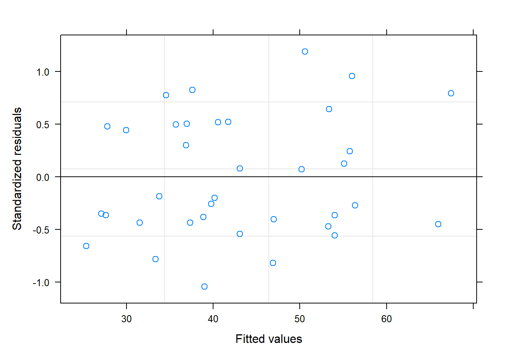
qqnorm(modelo)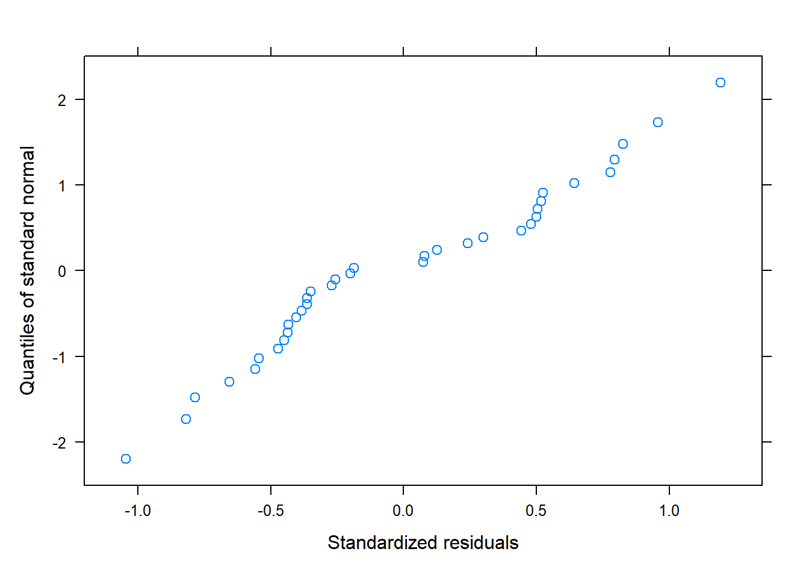
Según estos gráficos, diremos que sí se cumplen las premisas sobre los residuos.
Predicciones:
Para calcular las predicciones nos será útil usar las funciones del paquete ggeffects. Con este paquete se pueden realizar las predicciones de distinto tipo y también graficarlas con el paquete ggplot2.
library(ggeffects)pr.fixed <- ggpredict(modelo, "tiempo [all]", type="fixed")
pr.fixed# Predicted values of medida
tiempo | Predicted | 95% CI
-----------------------------------
1 | 32.12 | [29.28, 34.95]
2 | 49.67 | [44.85, 54.48]
3 | 47.20 | [41.58, 52.82]
Adjusted for:
* indiv = 0 (population-level)pr.random <- ggpredict(modelo, "tiempo [all]", type="random")
pr.random# Predicted values of medida
tiempo
------
1
2
3
Adjusted for:
* indiv = 0 (population-level)Con el argumento type="random", el intervalo es más ancho porque no sólo tiene en cuenta el error estándar de las estimaciones de los parámetros sino también la varianza de los efectos aleatorios.
library(gridExtra)
grid.arrange(
plot(pr.fixed) + ylim(25,60) + ggtitle("CI: fixed"),
plot(pr.random) + ylim(25,60) + ggtitle("CI: random"),
nrow=1, ncol=2)Resultado
Por lo tanto el modelo final contendrá el tiempo, el tiempo al cuadrado, la contaste y los coeficientes aleatorios. Finalmente, los residuos se puede suponer independientes.
Observaciones
- Se pueden incorporar términos splines en la fórmula usando la función
nsdel paquetespline. Es útil cuando se tienen muchas medidas repetidas y/o en distintos momentos para los diferentes individuos. Se usa en las fórmulas (argumentosfixedirandom)
lme(respuesta ~ ns(tiempo), random = ns(tiempo) | indiv, ...)Comparación con las otras técnicas
A fin de poder comparar los resultados de los modelo LMM con los modelos basados en la suma de cuadrados y en la respuesta multivariante, el tiempo se debe tratar como factor. Fíjate en el uso de as.factor para convertir una variable numérica a factor o variable categórica. Para ello, hay que tener las mismas categorías de tiempo para todos los individuos. Además, tanto los modelos de respuesta multivariable como los basados en suma de cuadrados, asumen la pendiente fija o constante, y la correlación sin estructura.
Nota: Es importante notar que las técnicas de respuesta multivariable y de suma de cuadrados al tratar la variable tiempo como factor, no se puede distinguir si tiempos de las medidas son o no equiespaiados. Por ejemplo los resultados obtenidos mediante estas dos técnicas serán los mismos tanto si se recogen las medidas a 1h, 2h y 3h, o si se recoge a 1h, 2h y 6h. En cambio, si se desea estudiar el efecto lineal ambas situaciones son muy distintas.
modelo <- lme(fixed = medida ~ as.factor(tiempo),
data=datos,
random = ~ 1 | indiv,
correlation = corSymm()
)
summary(modelo)Linear mixed-effects model fit by REML
Data: datos
AIC BIC logLik
218.5233 230.4954 -101.2616
Random effects:
Formula: ~1 | indiv
(Intercept) Residual
StdDev: 7.069756 3.498312
Correlation Structure: General
Formula: ~1 | indiv
Parameter estimate(s):
Correlation:
1 2
2 0.081
3 -0.561 0.628
Fixed effects: medida ~ as.factor(tiempo)
Value Std.Error DF t-value p-value
(Intercept) 32.11667 2.277053 22 14.104488 0
as.factor(tiempo)2 17.55000 1.368874 22 12.820757 0
as.factor(tiempo)3 15.08333 1.784415 22 8.452817 0
Correlation:
(Intr) as.()2
as.factor(tiempo)2 -0.301
as.factor(tiempo)3 -0.392 0.880
Standardized Within-Group Residuals:
Min Q1 Med Q3 Max
-1.95466422 -0.48588298 -0.07605957 0.47680669 2.08061488
Number of Observations: 36
Number of Groups: 12 coef(summary(modelo)) Value Std.Error DF t-value p-value
(Intercept) 32.11667 2.277053 22 14.104488 1.683824e-12
as.factor(tiempo)2 17.55000 1.368874 22 12.820757 1.104451e-11
as.factor(tiempo)3 15.08333 1.784415 22 8.452817 2.338498e-08La función anova aplicada a un sólo modelo ajustado es útil para contrastar la significación de un factor de más de una categoría (o posibles interacciones de factores de más de dos categorías).
anova(modelo) numDF denDF F-value p-value
(Intercept) 1 22 319.4667 <.0001
as.factor(tiempo) 2 22 99.9590 <.00016.7.2 Ejemplo 2
Analicemos ahora los datos introducidos en el capítulo anterior en el ejercicio 2. Recordemos que en la base de datos “Ejemplo_1W1B.csv” se tienen los datos de un estudio en el que participan 24 individuos randomizados en dos grupos de tratamiento (trat). Como en el anterior ejemplo, para cada invidivuo se miden los niveles a 1, 2 y 3 horas.
datos <- read.csv2("datos/Ejemplo_1W1B.csv")Como antes, ordenamos por individuo (de 1 a 24) y por tiempo
datos <- arrange(datos, indiv2, tiempo)modelo <- lme(fixed = medida ~ poly(tiempo,2)*trat,
data=datos,
random = ~ poly(tiempo,2) | indiv2,
correlation = corAR1()
)
summary(modelo)Linear mixed-effects model fit by REML
Data: datos
AIC BIC logLik
386.914 417.5692 -179.457
Random effects:
Formula: ~poly(tiempo, 2) | indiv2
Structure: General positive-definite, Log-Cholesky parametrization
StdDev Corr
(Intercept) 6.528818 (Intr) p(,2)1
poly(tiempo, 2)1 15.016144 0.720
poly(tiempo, 2)2 5.983554 -0.637 -0.653
Residual 1.290085
Correlation Structure: AR(1)
Formula: ~1 | indiv2
Parameter estimate(s):
Phi
5.458068e-05
Fixed effects: medida ~ poly(tiempo, 2) * trat
Value Std.Error DF t-value p-value
(Intercept) 22.16667 4.241672 44 5.225927 0.0000
poly(tiempo, 2)1 -35.16063 10.516421 44 -3.343403 0.0017
poly(tiempo, 2)2 33.10000 5.617817 44 5.891968 0.0000
trat 10.41389 2.682669 22 3.881914 0.0008
poly(tiempo, 2)1:trat 43.70542 6.651169 44 6.571088 0.0000
poly(tiempo, 2)2:trat -36.56667 3.553020 44 -10.291715 0.0000
Correlation:
(Intr) pl(,2)1 pl(,2)2 trat p(,2)1:
poly(tiempo, 2)1 0.659
poly(tiempo, 2)2 -0.435 -0.414
trat -0.949 -0.625 0.413
poly(tiempo, 2)1:trat -0.625 -0.949 0.393 0.659
poly(tiempo, 2)2:trat 0.413 0.393 -0.949 -0.435 -0.414
Standardized Within-Group Residuals:
Min Q1 Med Q3 Max
-1.17636054 -0.41451565 -0.05512438 0.37021883 1.36156358
Number of Observations: 72
Number of Groups: 24 Nota:
Si los individuos estuvieran anidados dentro de clusters, se especificaría en el argumento random = ~ 1 | indiv / clusters, donde “cluster” sería el nombre de la variable que codifica los clusters.
Observación Para que el modelo quede bien definido no es posible poner la interacción del tiempo y el tratamiento como coeficiente aleatorio. De esta manera se especifican como aleatorios la costante y los coeficientes del tiempo (lineal y cuadrático) para el grupo control.
Como en el anterior ejemplo, contrastamos la significación de los coeficientes aleatorios del tiempo:
anova(modelo, update(modelo, random = ~ 1 | indiv2)) Model df AIC BIC logLik Test L.Ratio p-value
modelo 1 14 386.9140 417.5692 -179.457
update(modelo, random = ~1 | indiv2) 2 9 393.6099 413.3168 -187.805 1 vs 2 16.69594 0.0051Según el criterio AIC o BIC, el modelo con pendientes aleatorias es mejor.
Luego, contrastamos si se puede simplificar la matriz de correlaciones de los efectos aleatorios:
anova(modelo, update(modelo, random = list(indiv2=pdDiag(~poly(tiempo,2))))) Model df AIC BIC logLik Test
modelo 1 14 386.9140 417.5692 -179.4570
update(modelo, random = list(indiv2 = pdDiag(~poly(tiempo, 2)))) 2 11 397.1845 421.2707 -187.5922 1 vs 2
L.Ratio p-value
modelo
update(modelo, random = list(indiv2 = pdDiag(~poly(tiempo, 2)))) 16.27047 0.001El test LRT es significativo (p-valor < 0.05). Por lo tanto nos quedamos con el modelo más complejo que supone que hay correlación entre los efectos aleatorios.
Seguidamente, miramos si se puede simplificar la matriz de correlaciones de los errores.
anova(modelo, update(modelo, correlation=NULL)) Model df AIC BIC logLik Test L.Ratio p-value
modelo 1 14 386.914 417.5692 -179.457
update(modelo, correlation = NULL) 2 13 384.914 413.3795 -179.457 1 vs 2 1.063989e-08 0.9999Sí que se puede suponer que hay indipendencia entre los residuos.
modelo <- update(modelo, correlation=NULL)Por lo tanto el modelo final, que supone independencia entre residuos, tiene la siguiente estimación de los efectos fijos:
coef(summary(modelo)) Value Std.Error DF t-value p-value
(Intercept) 22.16667 4.241667 44 5.225932 4.556683e-06
poly(tiempo, 2)1 -35.16063 10.516526 44 -3.343370 1.698154e-03
poly(tiempo, 2)2 33.10000 5.617838 44 5.891946 4.863408e-07
trat 10.41389 2.682666 22 3.881918 8.040480e-04
poly(tiempo, 2)1:trat 43.70542 6.651235 44 6.571023 4.876727e-08
poly(tiempo, 2)2:trat -36.56667 3.553033 44 -10.291677 2.732020e-13Vemos como el efecto del tiempo para el grupo control no llega a ser significativo (p-valores >0.05) tanto para su componente lineal como cuadrático. Hay efecto del tratamiento en el momento basal (trat2).
Si queremos ver el efecto del tiempo para el grupo 2, hay que cambiar su categoría de referencia.
datos$trat <- relevel(factor(datos$trat),2)
coef(summary(update(modelo))) Value Std.Error DF t-value p-value
(Intercept) 42.99444 1.896932 44 22.665259 6.756030e-26
poly(tiempo, 2)1 52.25020 4.703133 44 11.109658 2.358252e-14
poly(tiempo, 2)2 -40.03333 2.512374 44 -15.934465 6.870764e-20
trat1 -10.41389 2.682666 22 -3.881917 8.040486e-04
poly(tiempo, 2)1:trat1 -43.70542 6.651235 44 -6.571023 4.876723e-08
poly(tiempo, 2)2:trat1 36.56667 3.553033 44 10.291676 2.732023e-13Vemos que para el grupo 2 tanto la componente lineal como la cuadrática del tiempo son significativas.
Con la siguiente matriz de varianzas y covarianzas de los efectos aleatorios:
getVarCov(modelo)Random effects variance covariance matrix
(Intercept) poly(tiempo, 2)1 poly(tiempo, 2)2
(Intercept) 42.625 70.566 -24.889
poly(tiempo, 2)1 70.566 225.490 -58.669
poly(tiempo, 2)2 -24.889 -58.669 35.802
Standard Deviations: 6.5288 15.016 5.9835 Y varianza de los residuos
sigma(modelo)^2[1] 1.664273Por último, validamos el modelo
par(mfrow=c(1,2))
plot(modelo)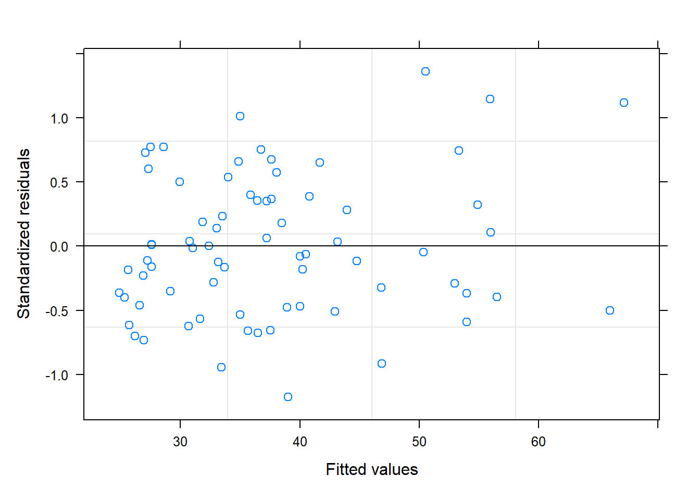
qqnorm(modelo)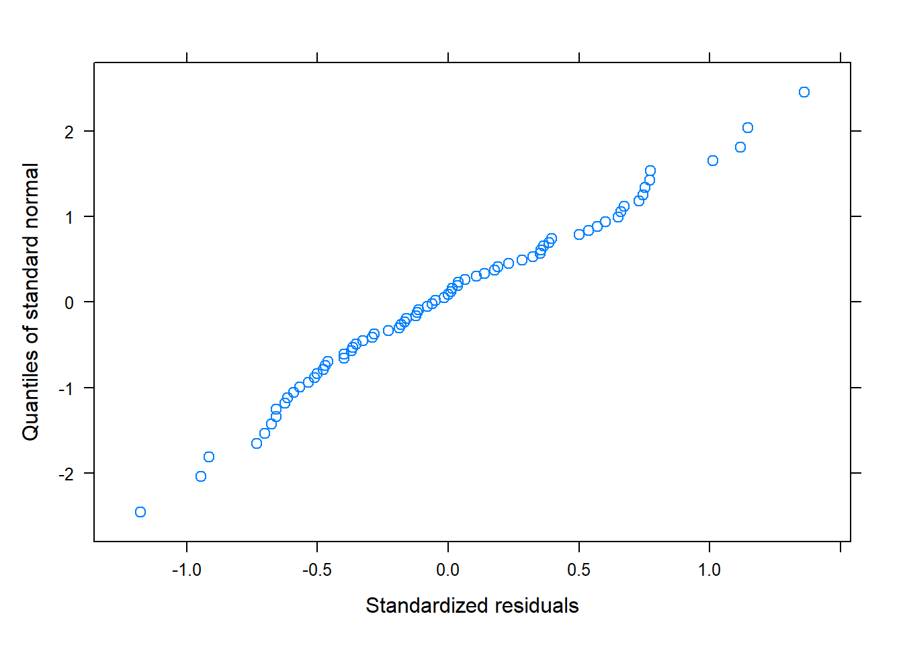
Según los gráficos, parece que sí que se cumplen las premisas sobre los residuos.
Predicciones
pr <- ggpredict(modelo, terms = c("tiempo [all]", "trat"))
pr# Predicted values of medida
# trat = 1
tiempo | Predicted | 95% CI
-----------------------------------
1 | 31.06 | [28.17, 33.95]
2 | 33.16 | [29.02, 37.30]
3 | 33.52 | [29.00, 38.05]
# trat = 2
tiempo | Predicted | 95% CI
-----------------------------------
1 | 32.12 | [29.22, 35.01]
2 | 49.67 | [45.53, 53.81]
3 | 47.20 | [42.67, 51.73]
Adjusted for:
* indiv2 = 0 (population-level)plot(pr, add.data = TRUE)6.7.3 Ejemplo 3
Finalmente, analicemos ahora los datos introducidos en el capítulo anterior en el ejercicio 3. En un estudio se quieren comparar el efecto de régimen de ejercicio sobre el sobrepeso. Para ello se reclutan 100 personas. A la mitad se le asigna el régimen y al resto se le hacen algunas recomendaciones (grupo control). Se mide el índice de masa corporal justo antes de empezar el estudio (momento basal), y al cabo de 1, 2 y 3 semanas. Como la edad es una variable importante para predecir el IMC también se registra.
Los datos los encontrarás en el fichero “imc.csv”
En este ejemplo, vemos como en algunos de los individuos nos falta alguna medida en a partir de la primera semana. Por este motivo usaremos la técnica de los LMM.
datos <- read.csv2("datos/imc.csv")Nos aseguramos que los datos estén ordenados por individuo y tiempo
datos <- arrange(datos, indiv, tiempo)Recodificamos nuestra variable tratamiento:
datos$tx <- factor(datos$tx, 1:2, c("Control", "Tratados"))
summary(datos) respuesta indiv tiempo edad tx
Min. : 9.80 Min. : 1.00 Min. :0.00 Min. :25.00 Control :200
1st Qu.:27.02 1st Qu.: 25.75 1st Qu.:0.75 1st Qu.:43.00 Tratados:200
Median :30.75 Median : 50.50 Median :1.50 Median :49.00
Mean :30.46 Mean : 50.50 Mean :1.50 Mean :49.03
3rd Qu.:34.60 3rd Qu.: 75.25 3rd Qu.:2.25 3rd Qu.:57.00
Max. :43.70 Max. :100.00 Max. :3.00 Max. :69.00
NA's :50 Recordemos también que estos datos no puedieron ser analizados con métodos tradicionales ya que tienen inviduos con datos faltantes
sum(with(datos, tapply(is.na(respuesta), indiv, any)))[1] 42Elimino las observaciones con valores missing (que no los individuos!)
datos <- subset(datos, !is.na(respuesta))
# número de individuos con 2, 3 o 4 medidas válidas.
table(table(datos$indiv))
2 3 4
8 34 58 Como siempre, hagamos una visualización de los datos
library(ggplot2)
p <- ggplot(data = datos, aes(x = tiempo, y = respuesta, group = indiv))
p <- p + geom_line(col="grey") + stat_summary(aes(group = 1),
geom = "line", fun = mean, size=2)
p + facet_grid( ~ tx)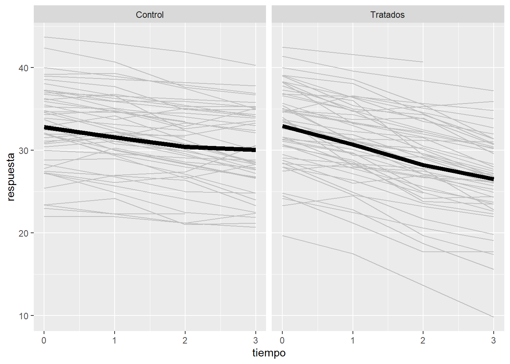
6.7.3.1 Análisis del grupo control
Si analizamos sólo el grupo control, se trata de un diseño 1W con una covariable (edad).
datos <- subset(datos, tx=='Control')
datos <- na.omit(datos)Ajustamos el modelo más completo, con la edad y el tiempo hasta el término cúbico ya que tenemos cuatro medidas.
library(nlme)
modelo <- lme(respuesta ~ poly(tiempo,3) + edad,
random= ~ poly(tiempo,3) | indiv,
data=datos,
#correlation = corSymm(), # sin estructura
correlation=corCAR1(form = ~ tiempo | indiv),
control=lmeControl(opt="optim"))
summary(modelo)Linear mixed-effects model fit by REML
Data: datos
AIC BIC logLik
672.3888 724.9826 -319.1944
Random effects:
Formula: ~poly(tiempo, 3) | indiv
Structure: General positive-definite, Log-Cholesky parametrization
StdDev Corr
(Intercept) 2.1235727 (Intr) p(,3)1 p(,3)2
poly(tiempo, 3)1 10.8729435 -0.143
poly(tiempo, 3)2 5.3455110 0.317 0.071
poly(tiempo, 3)3 4.2631158 0.057 -0.026 0.193
Residual 0.5431964
Correlation Structure: Continuous AR(1)
Formula: ~tiempo | indiv
Parameter estimate(s):
Phi
0.1999231
Fixed effects: respuesta ~ poly(tiempo, 3) + edad
Value Std.Error DF t-value p-value
(Intercept) 10.409728 1.4770932 115 7.047442 0.0000
poly(tiempo, 3)1 -15.045596 1.6657189 115 -9.032494 0.0000
poly(tiempo, 3)2 -0.518758 1.0075975 115 -0.514846 0.6076
poly(tiempo, 3)3 1.865008 0.8918255 115 2.091225 0.0387
edad 0.432945 0.0297828 48 14.536718 0.0000
Correlation:
(Intr) p(,3)1 p(,3)2 p(,3)3
poly(tiempo, 3)1 -0.024
poly(tiempo, 3)2 0.081 0.089
poly(tiempo, 3)3 0.012 -0.041 0.149
edad -0.978 -0.001 -0.037 -0.003
Standardized Within-Group Residuals:
Min Q1 Med Q3 Max
-1.025920132 -0.293663743 -0.008367651 0.290693758 1.093099300
Number of Observations: 168
Number of Groups: 50 El modelo de correlación sin estructura no converge (NOTA: intentad ejecutar el mismo código cambiando la correlación que tiene por la que está comentada). Es normal ya que tenemos distintas medidas.
Es importante especificar la AR(1) continua corCAR1 ya que tenemos algunos individuos con datos faltantes en algunas de sus medidas. Luego el tiempo que ha pasado entre las medidas disponibles hay que tenerlo en cuenta.
Fíjate en la varianza de los efectos aleatorios, sobretodo en la constante si en el modelo no ponemos la edad,
modelo0 <- update(modelo, fixed = . ~ . -edad)
getVarCov(modelo)Random effects variance covariance matrix
(Intercept) poly(tiempo, 3)1 poly(tiempo, 3)2 poly(tiempo, 3)3
(Intercept) 4.5096 -3.2917 3.6035 0.5144
poly(tiempo, 3)1 -3.2917 118.2200 4.1274 -1.1839
poly(tiempo, 3)2 3.6035 4.1274 28.5740 4.4056
poly(tiempo, 3)3 0.5144 -1.1839 4.4056 18.1740
Standard Deviations: 2.1236 10.873 5.3455 4.2631 getVarCov(modelo0) # sin la edadRandom effects variance covariance matrix
(Intercept) poly(tiempo, 3)1 poly(tiempo, 3)2 poly(tiempo, 3)3
(Intercept) 22.65700 -2.56910 0.79669 0.60630
poly(tiempo, 3)1 -2.56910 108.79000 2.88170 0.23627
poly(tiempo, 3)2 0.79669 2.88170 20.71700 3.90920
poly(tiempo, 3)3 0.60630 0.23627 3.90920 13.19500
Standard Deviations: 4.76 10.43 4.5516 3.6326 Es importante poner la edad ya que si no, la varianza de los efectos aleatorios quedan infladas y la inferencia no es válida.
Contraste de los efectos aleatorios
anova(modelo, update(modelo, random= ~ 1 | indiv)) Model df AIC BIC logLik Test L.Ratio p-value
modelo 1 17 672.3888 724.9826 -319.1944
update(modelo, random = ~1 | indiv) 2 8 662.1079 686.8579 -323.0539 1 vs 2 7.719062 0.5627Nos quedamos con el modelo con los coeficientes del tiempo fijos:
modelo <- update(modelo, random= ~ 1 | indiv)Observación Fíjate en el valor de \(\phi\) de la matriz de correlaciones de los errores: al considerar el coeficiente del tiempo como fijo, ha pasado de ser cero a un valor alto. Al considerar el coeficiente aleatorio en cierta manera se inducía una estructura de AR entre las observaciones y ya no hacía falta considerar los errores correlacionados. Por esto, el orden en que se simplifica el modelo es importante.
Si queremos contrastar si la constante es aletoria se compara el modelo con todos los efectos fijos. Así que ya no se podrá usar la función lme sino que se usará la función gls en su lugar.
modelo.gls <- gls(respuesta ~ poly(tiempo,3) + edad,
data=datos,
correlation=corCAR1(form = ~ tiempo |indiv))
summary(modelo.gls)Generalized least squares fit by REML
Model: respuesta ~ poly(tiempo, 3) + edad
Data: datos
AIC BIC logLik
660.2088 681.8651 -323.1044
Correlation Structure: Continuous AR(1)
Formula: ~tiempo | indiv
Parameter estimate(s):
Phi
0.8409838
Coefficients:
Value Std.Error t-value p-value
(Intercept) 10.743564 1.5857081 6.775247 0.0000
poly(tiempo, 3)1 -15.049949 1.6527760 -9.105861 0.0000
poly(tiempo, 3)2 -0.382757 1.0563295 -0.362347 0.7176
poly(tiempo, 3)3 1.978662 0.8789044 2.251283 0.0257
edad 0.425951 0.0319656 13.325311 0.0000
Correlation:
(Intr) p(,3)1 p(,3)2 p(,3)3
poly(tiempo, 3)1 0.001
poly(tiempo, 3)2 -0.022 0.019
poly(tiempo, 3)3 0.003 -0.121 0.024
edad -0.980 -0.002 -0.008 -0.001
Standardized residuals:
Min Q1 Med Q3 Max
-2.39865570 -0.70572628 -0.01464924 0.74989249 2.07647314
Residual standard error: 2.492824
Degrees of freedom: 168 total; 163 residualsummary(modelo)Linear mixed-effects model fit by REML
Data: datos
AIC BIC logLik
662.1079 686.8579 -323.0539
Random effects:
Formula: ~1 | indiv
(Intercept) Residual
StdDev: 0.8028047 2.378488
Correlation Structure: Continuous AR(1)
Formula: ~tiempo | indiv
Parameter estimate(s):
Phi
0.8266025
Fixed effects: respuesta ~ poly(tiempo, 3) + edad
Value Std.Error DF t-value p-value
(Intercept) 10.738507 1.6033545 115 6.697525 0.0000
poly(tiempo, 3)1 -15.048689 1.6348726 115 -9.204808 0.0000
poly(tiempo, 3)2 -0.382488 1.0548435 115 -0.362602 0.7176
poly(tiempo, 3)3 1.978466 0.8786767 115 2.251643 0.0262
edad 0.426057 0.0323229 48 13.181289 0.0000
Correlation:
(Intr) p(,3)1 p(,3)2 p(,3)3
poly(tiempo, 3)1 0.001
poly(tiempo, 3)2 -0.020 0.019
poly(tiempo, 3)3 0.003 -0.122 0.024
edad -0.980 -0.002 -0.008 -0.001
Standardized Within-Group Residuals:
Min Q1 Med Q3 Max
-2.25670886 -0.66026076 0.01991706 0.66013218 1.92440305
Number of Observations: 168
Number of Groups: 50 anova(modelo, modelo.gls) Model df AIC BIC logLik Test L.Ratio p-value
modelo 1 8 662.1079 686.8579 -323.0539
modelo.gls 2 7 660.2088 681.8651 -323.1044 1 vs 2 0.1009386 0.7507Los dos modelos no están anidados. Así que a parte del p-valor del LRT también miraremos el AIC y el BIC. Bajo los tres criterios nos decantamos por el modelo con la constante aleatoria.
Estructura de correlación de los errores
Comparamos con la matriz de independencia
anova(modelo, update(modelo, correlation=NULL)) Model df AIC BIC logLik Test L.Ratio p-value
modelo 1 8 662.1079 686.8579 -323.0539
update(modelo, correlation = NULL) 2 7 677.6130 699.2693 -331.8065 1 vs 2 17.50515 <.0001Nos quedamos con la estructura AR1
Contraste de los efectos fijos
coef(summary(modelo)) Value Std.Error DF t-value p-value
(Intercept) 10.7385066 1.6033545 115 6.697525 8.187045e-10
poly(tiempo, 3)1 -15.0486889 1.6348726 115 -9.204808 1.848306e-15
poly(tiempo, 3)2 -0.3824884 1.0548435 115 -0.362602 7.175678e-01
poly(tiempo, 3)3 1.9784662 0.8786767 115 2.251643 2.624396e-02
edad 0.4260575 0.0323229 48 13.181289 1.441756e-17Vemos como la parte cuadrática no es significativa y la cúbico tampoco. Para contrastar los dos términos (cuadrático y cúbico) a la vez comparamos mediante el LRT el modelo completo con el modelo que supone el efecto del tiempo lineal
anova(
update(modelo, method="ML"),
update(modelo, fixed = . ~ . - poly(tiempo,3) + tiempo, method="ML")
) Model df AIC BIC logLik
update(modelo, method = "ML") 1 8 662.6555 687.6473 -323.3278
update(modelo, fixed = . ~ . - poly(tiempo, 3) + tiempo, method = "ML") 2 6 663.4848 682.2286 -325.7424
Test L.Ratio p-value
update(modelo, method = "ML")
update(modelo, fixed = . ~ . - poly(tiempo, 3) + tiempo, method = "ML") 1 vs 2 4.82924 0.0894El p-valor > 0.05, por lo tanto nos quedamos con el modelo lineal.
modelo <- update(modelo, fixed = . ~ . - poly(tiempo,3) + tiempo)
summary(modelo)Linear mixed-effects model fit by REML
Data: datos
AIC BIC logLik
671.7705 690.4062 -329.8853
Random effects:
Formula: ~1 | indiv
(Intercept) Residual
StdDev: 1.61273 1.877586
Correlation Structure: Continuous AR(1)
Formula: ~tiempo | indiv
Parameter estimate(s):
Phi
0.7045807
Fixed effects: respuesta ~ edad + tiempo
Value Std.Error DF t-value p-value
(Intercept) 12.084507 1.5894665 117 7.602870 0
edad 0.426773 0.0319158 48 13.371839 0
tiempo -0.959328 0.1030230 117 -9.311792 0
Correlation:
(Intr) edad
edad -0.976
tiempo -0.092 -0.002
Standardized Within-Group Residuals:
Min Q1 Med Q3 Max
-2.13574976 -0.49274745 0.00586512 0.57010471 2.16657427
Number of Observations: 168
Number of Groups: 50 coef(summary(modelo)) Value Std.Error DF t-value p-value
(Intercept) 12.0845065 1.58946650 117 7.602870 7.939399e-12
edad 0.4267727 0.03191578 48 13.371839 8.365041e-18
tiempo -0.9593285 0.10302297 117 -9.311792 9.105728e-16Validación del modelo
- Errores
par(mfrow=c(1,2))
plot(modelo)qqnorm(modelo)- Efectos aleatorios
beta0i<- ranef(modelo)[,1]
qqnorm(beta0i); qqline(beta0i)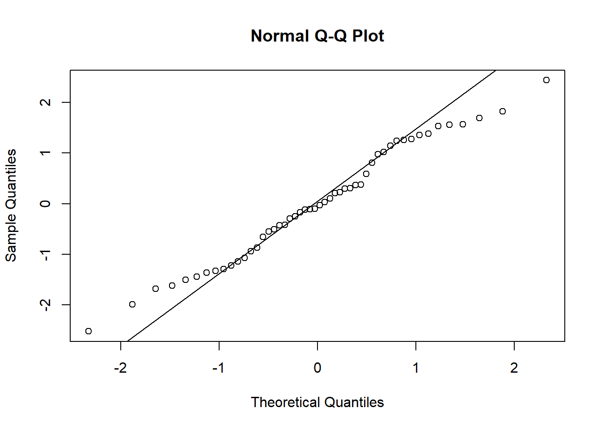
edad <- with(datos, tapply(edad, indiv, mean))
# gráfico de los efectos aleatorios vs variables individuo
plot(edad, beta0i)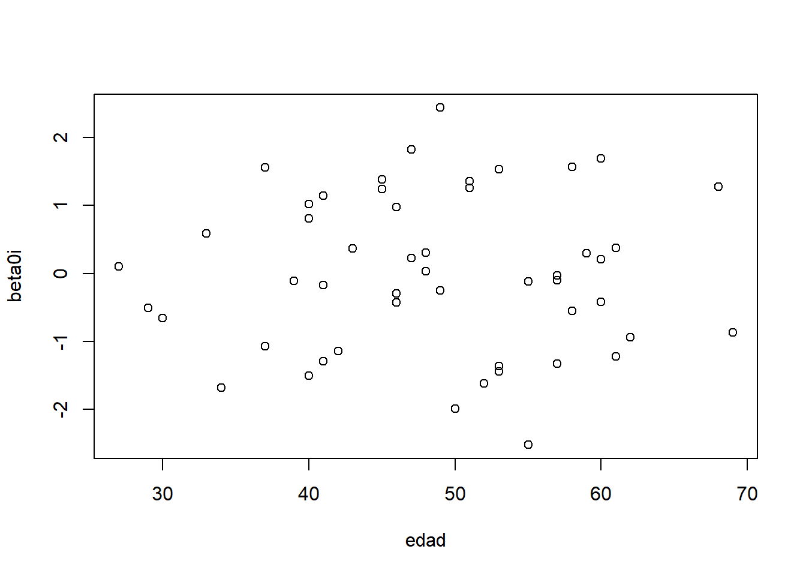
Parece que los efectos aleatorios siguen una distribución normal. Y no están relacionados con la edad.
Predicciones
library(ggeffects)
pr <- ggpredict(modelo, terms = c("tiempo [all]"))
pr# Predicted values of respuesta
tiempo | Predicted | 95% CI
-----------------------------------
0 | 32.57 | [31.89, 33.25]
1 | 31.61 | [30.99, 32.24]
2 | 30.65 | [30.02, 31.28]
3 | 29.69 | [29.00, 30.38]
Adjusted for:
* edad = 48.00
* indiv = 26.00plot(pr, add.data = TRUE)plot(pr, residuals = TRUE)Las predicciones las realiza en la media de las covariables, en este caso la edad. Si queremos que las predicciones las haga para un individuo de 55 años:
pr <- ggpredict(modelo, terms = c("tiempo [all]"), condition=c("edad"=55))
pr# Predicted values of respuesta
tiempo | Predicted | 95% CI
-----------------------------------
0 | 35.56 | [34.76, 36.35]
1 | 34.60 | [33.86, 35.34]
2 | 33.64 | [32.89, 34.38]
3 | 32.68 | [31.88, 33.48]
Adjusted for:
* indiv = 26.00plot(pr)6.7.3.2 Comparación de los dos tratamientos
datos <- read.csv2("datos/imc.csv")
datos <- datos[order(datos$indiv,datos$tiempo),]
datos <- na.omit(datos) # para eliminar datos con missings (pero no individuos)Volvemos al enunciado original trabajando con todos los datos. Ahora el objetivo es comparar la evolución de los dos tratamientos ajustando por la edad.
library(nlme)
modelo <- lme(respuesta ~ poly(tiempo, 3, raw=3) + tx:poly(tiempo, 3, raw=3) + edad,
random= ~ poly(tiempo, 3, raw=3) | indiv,
data=datos,
correlation=corCAR1(form = ~ tiempo|indiv))
summary(modelo)Linear mixed-effects model fit by REML
Data: datos
AIC BIC logLik
1417.874 1494.57 -688.9369
Random effects:
Formula: ~poly(tiempo, 3, raw = 3) | indiv
Structure: General positive-definite, Log-Cholesky parametrization
StdDev Corr
(Intercept) 2.3069274 (Intr) p(,3,r=3)1 p(,3,r=3)2
poly(tiempo, 3, raw = 3)1 1.9231468 -0.470
poly(tiempo, 3, raw = 3)2 1.7013762 0.354 -0.904
poly(tiempo, 3, raw = 3)3 0.3562430 -0.342 0.852 -0.990
Residual 0.9432126
Correlation Structure: Continuous AR(1)
Formula: ~tiempo | indiv
Parameter estimate(s):
Phi
0.248855
Fixed effects: respuesta ~ poly(tiempo, 3, raw = 3) + tx:poly(tiempo, 3, raw = 3) + edad
Value Std.Error DF t-value p-value
(Intercept) 11.168714 1.1301845 244 9.882204 0.0000
poly(tiempo, 3, raw = 3)1 2.402332 1.2555058 244 1.913438 0.0569
poly(tiempo, 3, raw = 3)2 -2.075890 1.1602056 244 -1.789243 0.0748
poly(tiempo, 3, raw = 3)3 0.447207 0.2546185 244 1.756379 0.0803
edad 0.442918 0.0224834 98 19.699782 0.0000
poly(tiempo, 3, raw = 3)1:tx -2.107063 0.7636948 244 -2.759037 0.0062
poly(tiempo, 3, raw = 3)2:tx 0.905552 0.7097238 244 1.275922 0.2032
poly(tiempo, 3, raw = 3)3:tx -0.194165 0.1561157 244 -1.243724 0.2148
Correlation:
(Intr) pl(,3,r=3)1 pl(,3,r=3)2 pl(,3,r=3)3 edad p(,3,r=3)1: p(,3,r=3)2:
poly(tiempo, 3, raw = 3)1 -0.048
poly(tiempo, 3, raw = 3)2 0.033 -0.949
poly(tiempo, 3, raw = 3)3 -0.028 0.899 -0.989
edad -0.975 0.027 -0.020 0.016
poly(tiempo, 3, raw = 3)1:tx 0.020 -0.948 0.903 -0.856 -0.020
poly(tiempo, 3, raw = 3)2:tx -0.013 0.898 -0.951 0.941 0.013 -0.947
poly(tiempo, 3, raw = 3)3:tx 0.010 -0.849 0.939 -0.951 -0.010 0.896 -0.988
Standardized Within-Group Residuals:
Min Q1 Med Q3 Max
-1.65153170 -0.36449401 -0.04684107 0.39784060 1.80027927
Number of Observations: 350
Number of Groups: 100 Nota: poly(tiempo, 3, raw=TRUE) es lo miso que tiempo + I(tiempo^2) + I(tiempo^3).
Fijate cómo se ha escrito la fórmula. De esta manera, cuando tiempo=0 (momento basal) no hay diferencias entre en los tratamientos.
Efectos aleatorios
anova(modelo, update(modelo, random = ~ 1 | indiv)) Model df AIC BIC logLik Test L.Ratio p-value
modelo 1 20 1417.874 1494.57 -688.9369
update(modelo, random = ~1 | indiv) 2 11 1408.597 1450.78 -693.2985 1 vs 2 8.7233 0.4632Vemos en este caso, como el p-valor del LRT no coincide con la decisión basada en el AIC o el BIC. Podemos decantarnos con el modelo más simple, o sea, el que supone que los coeficientes del tiempo son fijos.
modelo <- update(modelo, random = ~ 1 | indiv)Estructura de correlación de los errores
Comparamos con la matriz de independencia
anova(modelo, update(modelo, correlation=NULL)) Model df AIC BIC logLik Test L.Ratio p-value
modelo 1 11 1408.597 1450.780 -693.2985
update(modelo, correlation = NULL) 2 10 1446.555 1484.903 -713.2774 1 vs 2 39.95779 <.0001Nos quedamos con la estructura AR1.
Finalmente, comprovamos los efectos fijos:
coef(summary(modelo)) Value Std.Error DF t-value p-value
(Intercept) 10.9983674 1.17012354 244 9.399322 4.150278e-18
poly(tiempo, 3, raw = 3)1 2.2104398 1.28087236 244 1.725730 8.566199e-02
poly(tiempo, 3, raw = 3)2 -1.8762381 1.14921815 244 -1.632621 1.038384e-01
poly(tiempo, 3, raw = 3)3 0.4026454 0.25308582 244 1.590944 1.129169e-01
edad 0.4463927 0.02329682 98 19.161101 6.509723e-35
poly(tiempo, 3, raw = 3)1:tx -1.9653182 0.78262641 244 -2.511183 1.268004e-02
poly(tiempo, 3, raw = 3)2:tx 0.7598944 0.70301744 244 1.080904 2.808070e-01
poly(tiempo, 3, raw = 3)3:tx -0.1617992 0.15513365 244 -1.042967 2.979960e-01Como era de esperar, la edad es muy significativa.
Contrastamos el efecto cuadrático y cúbico del tiempo (tanto para el grupo control como para el grupo de tratados):
modelo2 <- update(modelo, fixed = . ~ tiempo + tiempo:tx + edad)
coef(summary(modelo2)) Value Std.Error DF t-value p-value
(Intercept) 11.0143619 1.16920806 248 9.4203610 3.281588e-18
tiempo 0.1947449 0.21775844 248 0.8943163 3.720198e-01
edad 0.4462810 0.02328366 98 19.1671311 6.352777e-35
tiempo:tx -1.1381679 0.13574697 248 -8.3844810 3.860440e-15anova(modelo, modelo2) Model df AIC BIC logLik Test L.Ratio p-value
modelo 1 11 1408.597 1450.780 -693.2985
modelo2 2 7 1394.327 1421.252 -690.1637 1 vs 2 6.269749 0.1799Como el p-valor del LRT es >0.05, nos quedamos con el modelo más simple, en que el tiempo tiene un efecto lineal en ambos grupos
modelo <- modelo2
coef(summary(modelo)) Value Std.Error DF t-value p-value
(Intercept) 11.0143619 1.16920806 248 9.4203610 3.281588e-18
tiempo 0.1947449 0.21775844 248 0.8943163 3.720198e-01
edad 0.4462810 0.02328366 98 19.1671311 6.352777e-35
tiempo:tx -1.1381679 0.13574697 248 -8.3844810 3.860440e-15El efecto del tiempo en el grupo control no es significativo.
Para ver el efecto del tiempo en el grupo de tratamiento, cambiamos la categoria de referencia:
datos$tx <- factor(datos$tx, 2:1)
coef(summary(update(modelo))) Value Std.Error DF t-value p-value
(Intercept) 11.014362 1.16920806 248 9.420361 3.281588e-18
tiempo -2.081591 0.10101027 248 -20.607715 1.166972e-55
edad 0.446281 0.02328366 98 19.167131 6.352777e-35
tiempo:tx1 1.138168 0.13574697 248 8.384481 3.860440e-15Vemos como el efecto del tiempo en el grupo de tratados es significativo y la pendiente es negativa.
Validación
# residuos
plot(modelo)qqnorm(modelo)# efectos aleatorios
beta0i <- ranef(modelo)[,1]
grupo <- with(datos, tapply(tx, indiv, head, n=1))
edad <- with(datos, tapply(edad, indiv, mean))
boxplot(beta0i ~ grupo)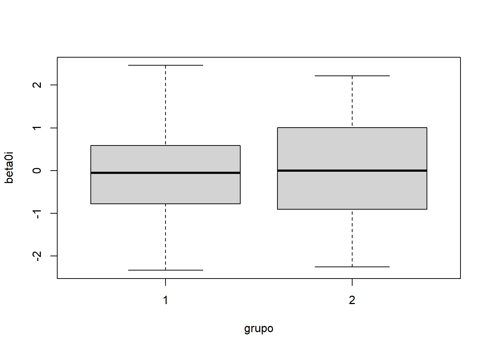
plot(edad, beta0i)Predicciones
datos$tx <- factor(datos$tx, 1:2)
modelo <- update(modelo)
pr.cont <- ggpredict(modelo, terms = c("tiempo"), condition=c(tx=1), type="fixed")
pr.tx <- ggpredict(modelo, terms = c("tiempo"), condition=c(tx=2), type="fixed")
pr.cont# Predicted values of respuesta
tiempo | Predicted | 95% CI
-----------------------------------
0 | 32.88 | [32.39, 33.38]
1 | 31.94 | [31.47, 32.41]
2 | 31.00 | [30.47, 31.52]
3 | 30.05 | [29.41, 30.69]
Adjusted for:
* edad = 49.00
* indiv = 52.50pr.tx# Predicted values of respuesta
tiempo | Predicted | 95% CI
-----------------------------------
0 | 32.88 | [32.39, 33.38]
1 | 30.80 | [30.33, 31.27]
2 | 28.72 | [28.19, 29.25]
3 | 26.64 | [25.99, 27.28]
Adjusted for:
* edad = 49.00
* indiv = 52.50library(gridExtra)
grid.arrange(
plot(pr.cont) + ylim(24,40) + ggtitle("controles"),
plot(pr.tx) + ylim(24,40) + ggtitle("tratados"),
nrow=1, ncol=2)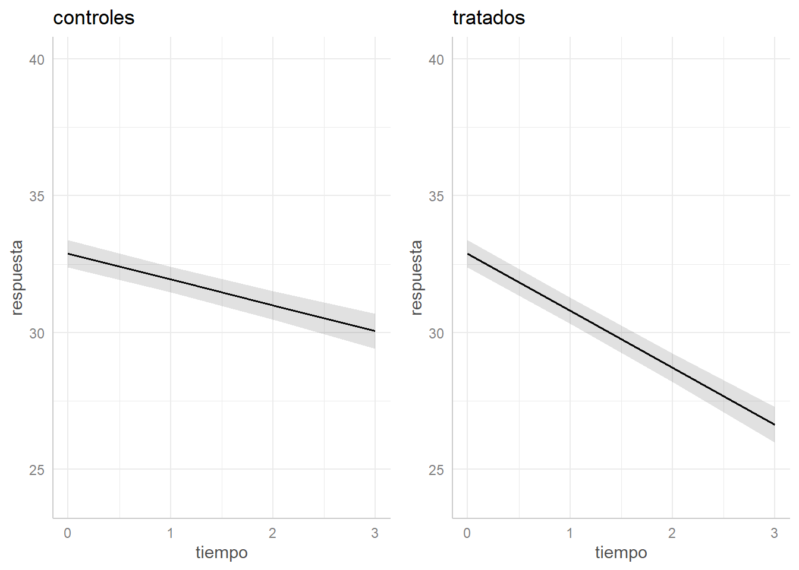
6.8 Ejercicios
6.8.1 Ejercicio 4
Los datos
sleepstudyde la libreríalme4contienen información sobre 18 dindividuos que se han seguido durante 9 días, y para los cuales se ha registrado el tiempo de reacción (en milisegundos) tras haber estado en deprivación de sueño.Los datos pueden cargarse mediante
library(lme4)
data(sleepstudy)
- Crea un spaguetti plot para ver la evolución de la reacción a lo largo del tiempo
- Modeliza el tiempo de reacción (variable respuesta) a lo largo de los días. Usa tanto polinomios como splines con la función
ns(). Puedes usar la funciónanova()con el test LRT para contrastar si es necesario usar términos splines (ns()) o polinomiospoly()).
6.8.2 Ejercicio 5
Los datos
dietoxde la libreríageepackcontienen el peso de cerdos medidos semanalmente durante 12 semanas cuando son sacrificados (Weight). Los datos también contienen el peso en la semana 1 (Start), tres niveles diferentes de vitamina E (Evit - dosis: 0, 100, 200 mg dl-alfa-tocoferil acetato / kg de alimento) en combinación con 3 niveles diferentes de cobre (Cu - dosis: 0, 35, 175 mg / kg de alimento) que reciben en el alimento. También se registra la ingesta acumulada de alimento (Feed). Los cerdos son compañeros de camada (Litter). El objetivo principal es ver qué combinación de suplementos en el alimento hace que los cerdos alcancen un mayor peso.
- Haz una descriptiva de las variables (summary)
- ¿Qué variables son tiempo dependientes y cuáles no? (crea un gráfico para Weight, Evit y Cu)
- Ajusta un modelo mixto para contestar a la pregunta científica
- ¿Qué variables as considerado con efecto aleatorio?
- ¿Qué estructura de correlaciones has considerado?
- Intenta cambiar algunos aspectos del modelo (añadir quitar coeficientes aleatorios, estructura de correlación de los errores, simplificar o añadir variables/interacciones, …) para elegir el mejor modelo
- Una vez escogido el modelo final, haz un gráfico de la evolución de la variable respuesta a diferentes niveles de
Start.